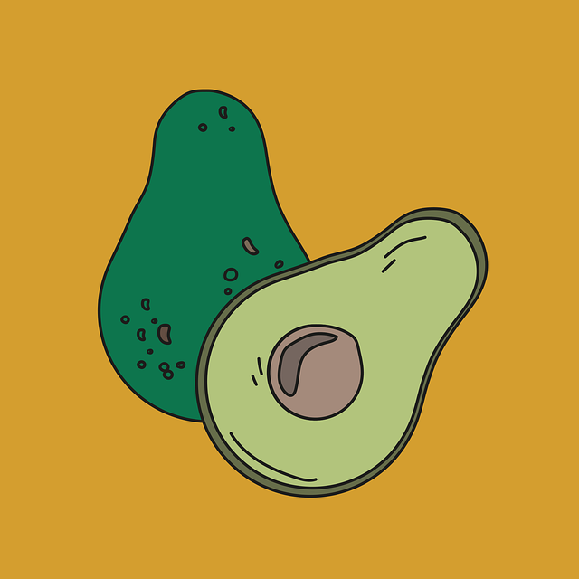

overflow: ; 영역밖의 내용 처리법
- overflow: visible; 영역밖의 내용 보임(기본값)
- overflow: hidden; 영역밖의 내용 숨김
- overflow: scroll; 스크롤바를 생성
- overflow: auto; 스크롤바 자동 생성
overflow: visible;
overflow: visible; 영역밖의 내용 보임(기본값)

overflow: hidden;
overflow: hidden; 영역밖의 내용 숨김(잘라냄)
overflow: scroll;
overflow: scroll;스크롤바 생성
overflow: auto;
overflow: auto; 스크롤바 자동
말줄임표 표시하기
overflow: hidden; 영역밖의 내용 숨김
white-space: nowrap; 강제 줄바꿈 금지
text-overflow: ellipsis; 말줄임표(...)표시
overflow: hidden; 영역밖의 내용 숨김
white-space: nowrap; 강제 줄바꿈 금지
text-overflow: ellipsis;} 말줄임표(...)표시